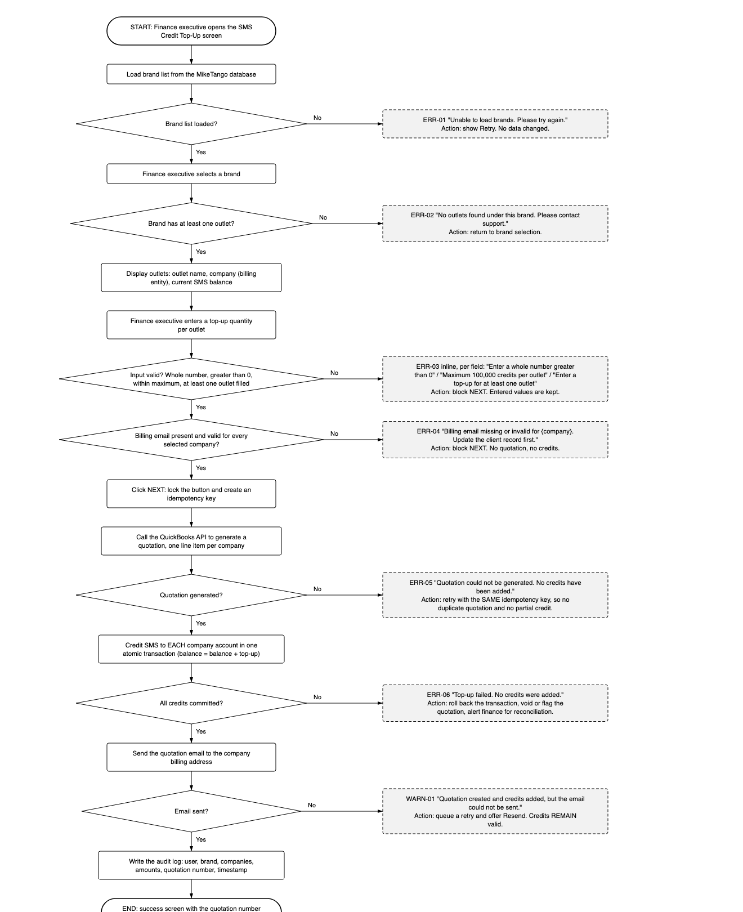
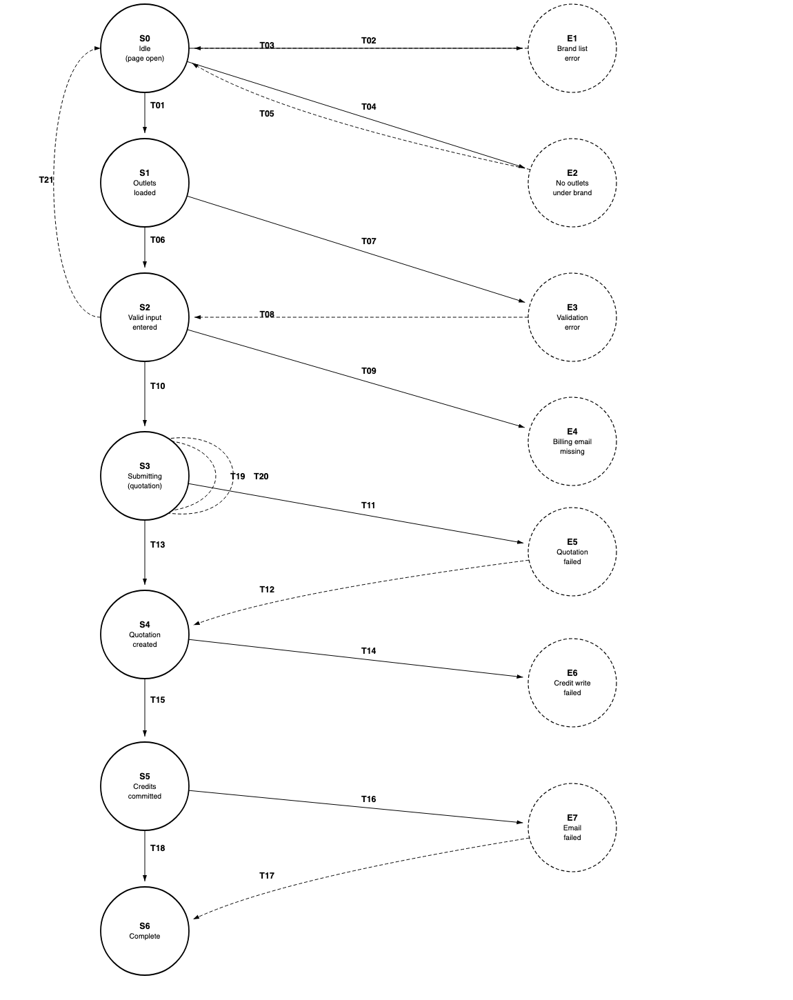

Quality Assurance Engineering Intern - Assessment
SMS Credit Reload feature (MikeTango / GoSMS) | Syed Muhammad Aziz Ghaus | azizghaus14@gmail.com | +60 17-414 7089
Assessment 1 describes the SMS Credit Reload feature and how it is intended to work. This document is the response to Assessment 2: Part 1 is the flowchart for the feature including error handling, and Part 2 is the set of test cases, supported by a state transition model that shows the coverage is complete.
1. Assumptions
2. Assessment 2, Part 1 - Flowchart (including error handling and messages)

3. Assessment 2, Part 2 - Test cases
3.1 State transition model
The feature is modelled with the four elements of state transition testing: states (the circles), transitions (the arrows), events (what triggers a transition) and actions (what the system does in response, including the message shown). Arrows are numbered; the event and action for each are listed in the transition table.

| State | Meaning |
| S0 | Page open, no brand selected |
| S1 | Brand selected, outlets loaded |
| S2 | Valid top-up amounts entered |
| S3 | Submitting (quotation request in flight) |
| S4 | Quotation generated |
| S5 | Credits committed |
| S6 | Complete (emailed, audit logged, success screen) |
| E1-E7 | Error states, one per failure point in the flowchart |
3.2 Transition table
| ID | From | Event | Action (system response / message) | To |
| T01 | S0 | Select a brand that has outlets | Show outlet list with company (billing entity) and current balance | S1 |
| T02 | S0 | Open page, brand list fails to load | ERR-01 "Unable to load brands. Please try again." + Retry | E1 |
| T03 | E1 | Retry after service restored | Brand list displayed | S0 |
| T04 | S0 | Select a brand with no outlets | ERR-02 "No outlets found under this brand." | E2 |
| T05 | E2 | Return to brand selection | Selection cleared | S0 |
| T06 | S1 | Enter valid top-up amounts | NEXT enabled | S2 |
| T07 | S1 | Enter invalid amount | ERR-03 inline message; entered values kept | E3 |
| T08 | E3 | Correct the input | Error cleared, NEXT enabled | S2 |
| T09 | S2 | Click NEXT with missing/invalid billing email | ERR-04 naming the company; no quotation, no credits | E4 |
| T10 | S2 | Click NEXT with all data valid | Button locked, idempotency key created | S3 |
| T11 | S3 | QuickBooks error or timeout | ERR-05 "No credits have been added." + Retry | E5 |
| T12 | E5 | Retry with the same idempotency key | Exactly one quotation created | S4 |
| T13 | S3 | Quotation generated | Quotation number issued, line item per company | S4 |
| T14 | S4 | Credit transaction fails | ERR-06, transaction rolled back, quotation voided/flagged, finance alerted | E6 |
| T15 | S4 | Credits committed atomically | balance = balance + top-up, per company | S5 |
| T16 | S5 | Quotation email fails to send | WARN-01; credits and quotation remain valid; Resend offered | E7 |
| T17 | E7 | Resend (manual or queued) | Email delivered; credits not applied again | S6 |
| T18 | S5 | Quotation email sent | Audit log written; success screen shown | S6 |
| T19 | S3 | Second submit (double click) | Blocked by idempotency key; no duplicate quotation or credits | S3 |
| T20 | S3 | Session expires mid-submission | Re-authentication prompt; flow resumes once, single credit | S3 |
| T21 | S2 | Cancel or navigate away | All input discarded; no quotation, no credits, no audit entry | S0 |
Every transition listed above is covered by exactly one test case, and no transition is tested twice. T07 is a single transition reached by six different invalid inputs, so it is written as one data-driven test case (TC-07) rather than six near-identical ones.
Transition to test case: T01 - TC-01, T02 - TC-02, T03 - TC-03, T04 - TC-04, T05 - TC-05, T06 - TC-06, T07 - TC-07, T08 - TC-08, T09 - TC-09, T10 - TC-10, T11 - TC-11, T12 - TC-12, T13 - TC-13, T14 - TC-14, T15 - TC-15, T16 - TC-16, T17 - TC-17, T18 - TC-18, T19 - TC-19, T20 - TC-20, T21 - TC-21. Business rules R1 to R6 are covered by TC-22 to TC-27.
3.3 Business rules (traceability)
| ID | Rule |
| R1 | SMS credits are charged and credited to the company (billing entity), never to the brand as a whole |
| R2 | A single submission may cover outlets belonging to different companies |
| R3 | Only outlets with a top-up entered are quoted and credited |
| R4 | Quotation line totals, tax and grand total match the system calculation to 2 decimal places |
| R5 | A top-up increments the existing balance rather than replacing it |
| R6 | Every successful top-up is recorded in the audit log |
3.4 Test cases
Each case is traceable to a transition (T) or business rule (R), and states its own preconditions and data so it can be repeated by anyone.
| ID | Ref | Title | Precondition | Steps | Expected result | Type |
| TC-01 | T01 | Select a brand that has outlets | Brand 'SilverTree' has 3 outlets across 2 companies | Select 'SilverTree' | Outlet list shows all 3 outlets with outlet name, company and current SMS balance | Positive |
| TC-02 | T02 | Brand list fails to load | Brand list service unavailable | Open the Top-Up page | ERR-01 shown with Retry. No data written anywhere | Negative |
| TC-03 | T03 | Recover from brand list failure | ERR-01 displayed; service restored | Click Retry | Brand list loads; back in S0 | Recovery |
| TC-04 | T04 | Brand with no outlets | Brand 'EmptyBrand' has 0 active outlets | Select 'EmptyBrand' | ERR-02 shown; NEXT unavailable | Negative |
| TC-05 | T05 | Return from the no-outlet state | ERR-02 displayed | Choose another brand | Selection cleared and the new brand's outlets load | Recovery |
| TC-06 | T06 | Enter valid top-up quantities | Outlets displayed | Enter 500 for outlet A, 1000 for outlet B, leave C blank | Values accepted; NEXT enabled | Positive |
| TC-07 | T07 | Invalid input (data-driven, single transition) | Outlets displayed | Enter in turn: 0 / -50 / 1.5 / abc / all blank / 100001 | Matching ERR-03 message each time; NEXT stays disabled; valid values preserved | Negative |
| TC-08 | T08 | Correct an invalid input | ERR-03 displayed | Replace the invalid value with 500 | Error clears; NEXT enabled | Recovery |
| TC-09 | T09 | Missing billing email | Outlet B's company has no billing email | Enter valid amounts, click NEXT | ERR-04 naming the company; no quotation, no credits | Negative |
| TC-10 | T10 | Submit a valid top-up | Valid amounts; all billing emails present | Click NEXT | Button locks; idempotency key created; quotation requested | Positive |
| TC-11 | T11 | QuickBooks unavailable | QuickBooks returns error/timeout | Click NEXT | ERR-05 shown; no quotation; no credits on any company | Negative |
| TC-12 | T12 | Retry after QuickBooks failure | ERR-05 displayed; QuickBooks restored | Click Retry | Exactly one quotation exists; credits applied once | Recovery |
| TC-13 | T13 | Quotation generated | Valid submission; QuickBooks healthy | Click NEXT | Quotation created with one line item per company matching the entered amounts | Positive |
| TC-14 | T14 | Credit write fails after quotation | Quotation created; credit transaction fails mid-way | Complete submission | ERR-06; no company partially credited; quotation voided/flagged; finance alerted | Negative |
| TC-15 | T15 | Credits committed per company | Quotation created successfully | Complete submission | Each company's balance rises by its own amount; other companies unchanged | Positive |
| TC-16 | T16 | Quotation email fails | Credits committed; mail service down | Complete submission | WARN-01; credits and quotation remain valid; Resend offered | Negative |
| TC-17 | T17 | Resend the quotation email | WARN-01 displayed; mail service restored | Click Resend | Email delivered; credits not applied a second time | Recovery |
| TC-18 | T18 | Full happy path | All services healthy | Complete the flow | Email sent, audit log written, success screen shows quotation number and updated balances | Positive |
| TC-19 | T19 | Double submission | Valid amounts entered | Click NEXT twice rapidly | One quotation and one credit transaction only | Negative |
| TC-20 | T20 | Session expires during submission | Submission in flight; token expires | Complete submission | Re-authentication prompt; afterwards exactly one quotation and one set of credits | Negative |
| TC-21 | T21 | Cancel mid-flow | Amounts entered, NEXT not clicked | Navigate away, then return | No quotation, no credits, no audit entry; clean form | Negative |
| TC-22 | R1 | Credits are company-scoped | Brand spans Company X and Company Y | Top up an outlet belonging to Company X only | Only Company X is credited and billed; Company Y untouched | Business rule |
| TC-23 | R2 | Several companies in one submission | Brand spans Company X and Company Y | Top up 500 for X's outlet and 800 for Y's outlet | Charges separated per billing entity, each emailed to its own address; X +500, Y +800 | Business rule |
| TC-24 | R3 | Partial fill of the outlet list | Brand has 3 outlets | Fill outlet A only | Only A's company is quoted and credited; B and C excluded entirely | Business rule |
| TC-25 | R4 | Quotation totals and rounding | Amounts producing a fractional tax value | Submit | Line totals, tax and grand total match to 2 decimal places with no rounding drift | Business rule |
| TC-26 | R5 | Balance is incremented, not overwritten | Company X holds 2,000 credits | Top up 500 | Balance becomes 2,500 | Business rule |
| TC-27 | R6 | Audit trail completeness | Successful top-up | Complete flow, open audit log | Entry records user, brand, companies, amounts, quotation number and timestamp | Business rule |
4. Highest-risk areas